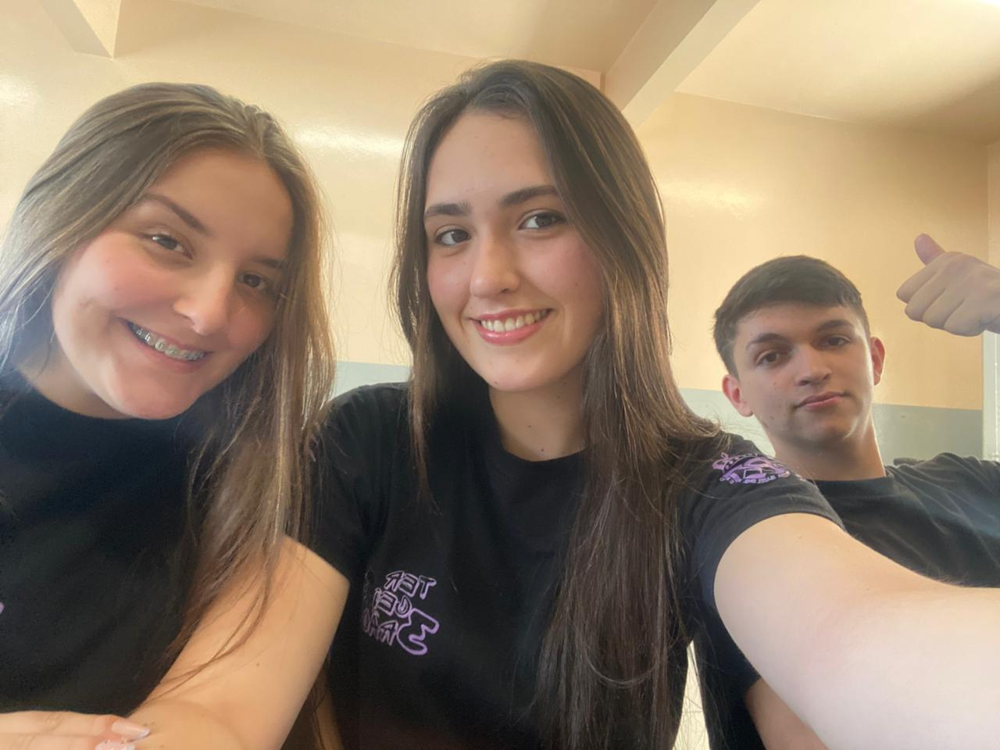
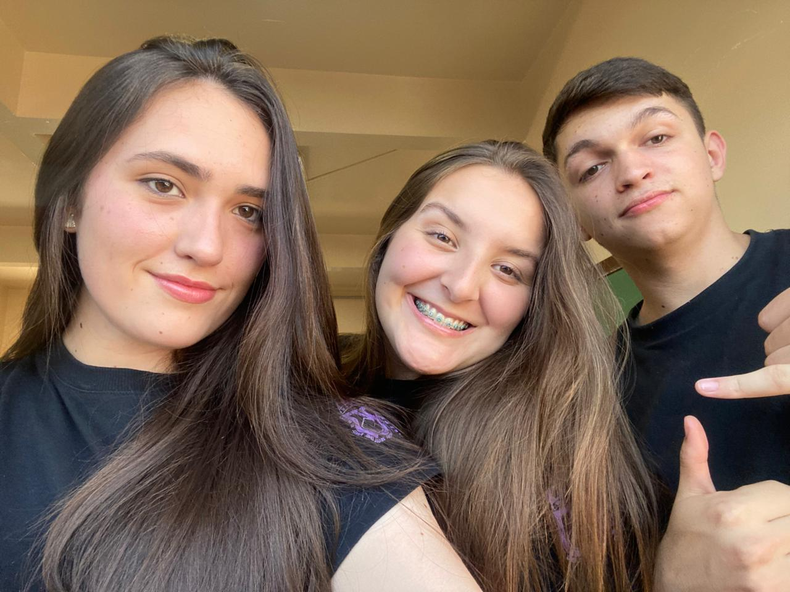

Trio ABM,
Gente… às vezes eu paro e percebo que a gente realmente viveu uma história. Não foi só amizade. Não foi só coleguismo de sala. Não foi só convivência. Foi trajetória. Foi crescimento. Foi bagunça, foi caos, foi amor, foi briga, foi choro, foi cuidado, foi tudo ao mesmo tempo. Foram três anos sendo o que ninguém mais conseguiu ser: um trio que sobreviveu ao Ensino Médio inteiro — e isso não é pouca coisa.
Quando a gente entrou lá em 2023, ninguém imaginava que aquele começo meio perdido, meio confuso, iria virar o ABM 💚💜. E virou. Virou nas conversas idiotas, nas brigas que só duravam uma semana no máximo, nas reconciliações que sempre chegavam, nos detalhes que só quem viveu entende. A verdade é que nós três crescemos juntos. A gente mudou junto. A gente amadureceu junto.

E nesse meio tempo, a gente viveu tudo: Agroleite, gruta, Colombo, vinícola, hidroponia… viagens, histórias, fotos que guardam mais emoções do que a gente consegue explicar. Momentos que talvez, daqui a alguns anos, vão bater na memória e dar aquela saudade que aperta, mas ao mesmo tempo aquece o coração. Porque foram reais. Foram nossos.
E apesar de brigas, surtos, dias ruins, fases estranhas… a gente nunca deixou de voltar um pro outro. Isso pra mim é o que define o trio ABM: não é perfeição, é voltar. Sempre voltar. Sempre ter onde cair. Sempre ter com quem rir. Sempre ter quem entender, mesmo sem concordar.
E agora, no final do 3º ano, bate aquela sensação estranha… uma mistura de final de capítulo com o medo do que vem depois. Porque vai vir mudança. Vai vir distância. Vai vir rotina nova. Vai vir vida adulta batendo na porta. E talvez cada um siga pra um lado. E talvez a gente não consiga se ver tanto. Mas nada disso apaga o que já foi.
O trio ABM não é só presente. É história. É memória. É parte do que cada um vai carregar daqui pra frente.
Eu só quero agradecer vocês duas. Por me aguentarem, por rirem comigo, por brigarem comigo, por me corrigirem, por me zoarem, por estarem ali — do jeitinho de vocês. Aghata com a delicadeza e o brilho dela. Maria com a força e a sinceridade que só ela tem. E eu ali no meio, meio bagunçado, meio exagerado, mas sempre feliz de ter vocês duas.
Se um dia a vida separar nossos caminhos, que ela nunca apague nossa história. Que a gente olhe pra trás e pense:
“Caramba. Valeu a pena. Valeu cada minuto.”
ABM pra sempre.
Não por obrigação.
Mas porque marcou.
Porque foi verdadeiro.
Porque foi nosso.
💚💜
